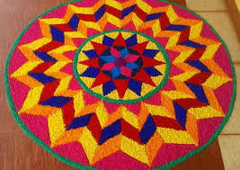

An ancient Indian art form, a type of Rangoli, using flower petals instead of or with colored powders. Known as Pookalam in Kerala, especially for the Onam festival. Creates decorative patterns on floors to bring joy, positivity, and welcome gods.
Geometric rangoli uses basic shapes like circles, squares, and triangles to create intricate, symmetrical patterns, blending art with math, culture, and mindfulness, often symbolizing cosmic energy and representing traditions for festivals like Diwali, using materials from rice flour to colored sand to form designs that can be simple or complex, linking to ancient practices for welcoming deities and bringing positive energy.
